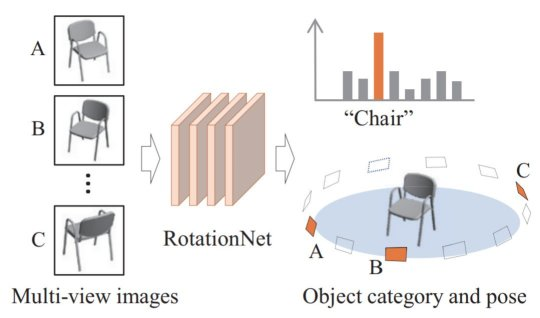

We propose a Convolutional Neural Network (CNN)-based model "RotationNet," which takes multi-view images of an object as input and jointly estimates its pose and object category. Unlike previous approaches that use known viewpoint labels for training, our method treats the viewpoint labels as latent variables, which are learned in an unsupervised manner during the training using an unaligned object dataset. RotationNet is designed to use only a partial set of multi-view images for inference, and this property makes it useful in practical scenarios where only partial views are available. Moreover, our pose alignment strategy enables one to obtain view-specific feature representations shared across classes, which is important to maintain high accuracy in both object categorization and pose estimation. Effectiveness of RotationNet is demonstrated by its superior performance to the state-of-the-art methods of 3D object classification on 10- and 40-class ModelNet datasets. We also show that RotationNet, even trained without known poses, achieves the state-of-the-art performance on an object pose estimation dataset.
@inproceedings{kanezaki2018_rotationnet,
title={RotationNet: Joint Object Categorization and Pose Estimation Using Multiviews from Unsupervised Viewpoints},
author={Asako Kanezaki and Yasuyuki Matsushita and Yoshifumi Nishida},
booktitle={Proceedings of IEEE International Conference on Computer Vision and Pattern Recognition (CVPR)},
year={2018},}